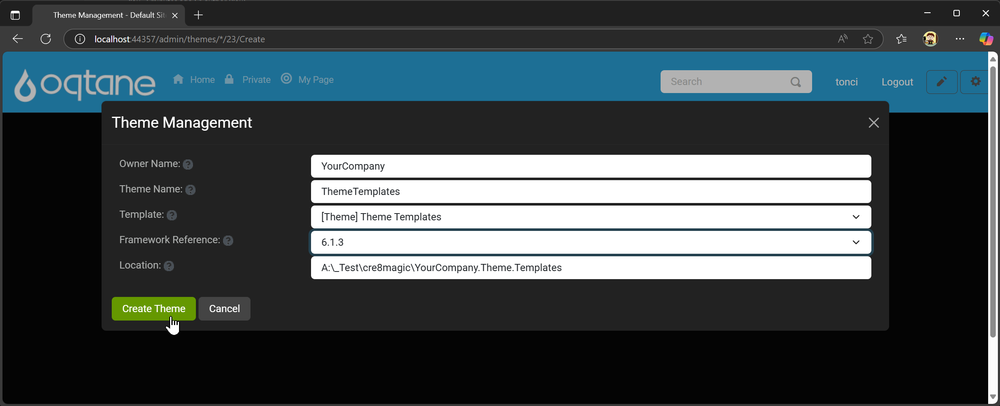
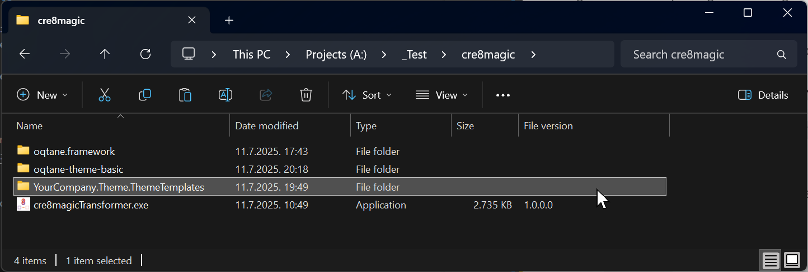
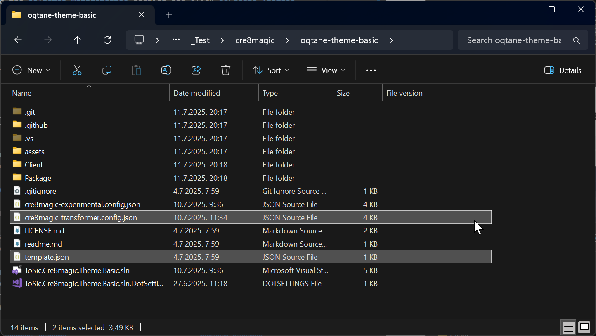
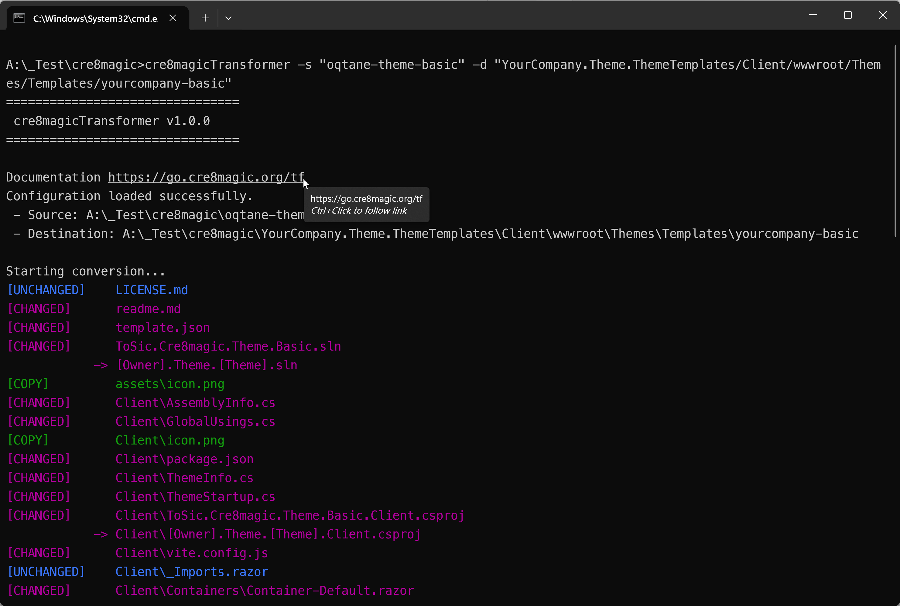
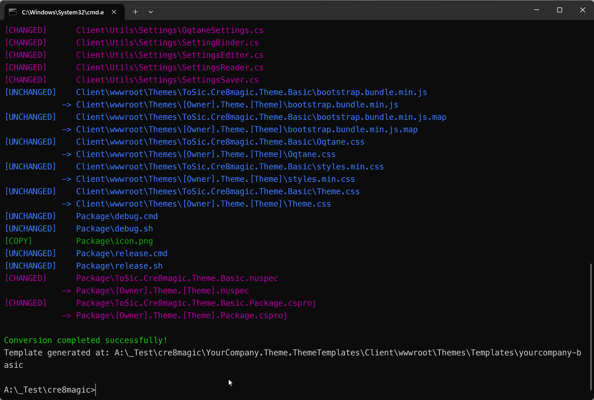
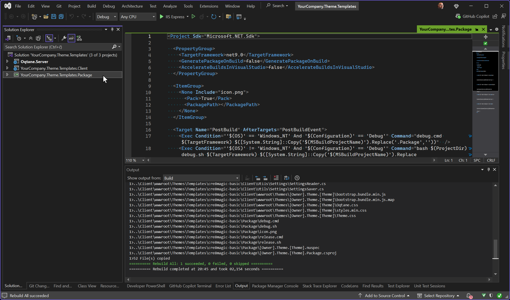
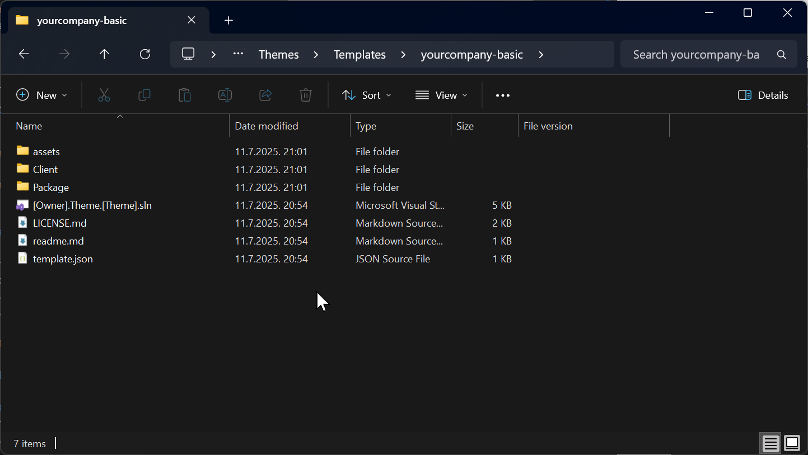
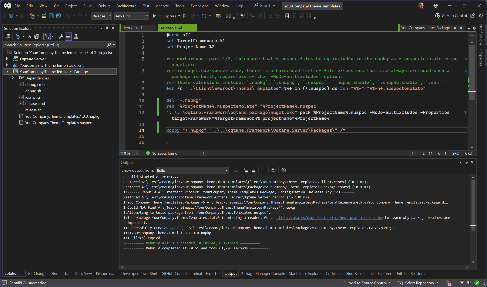
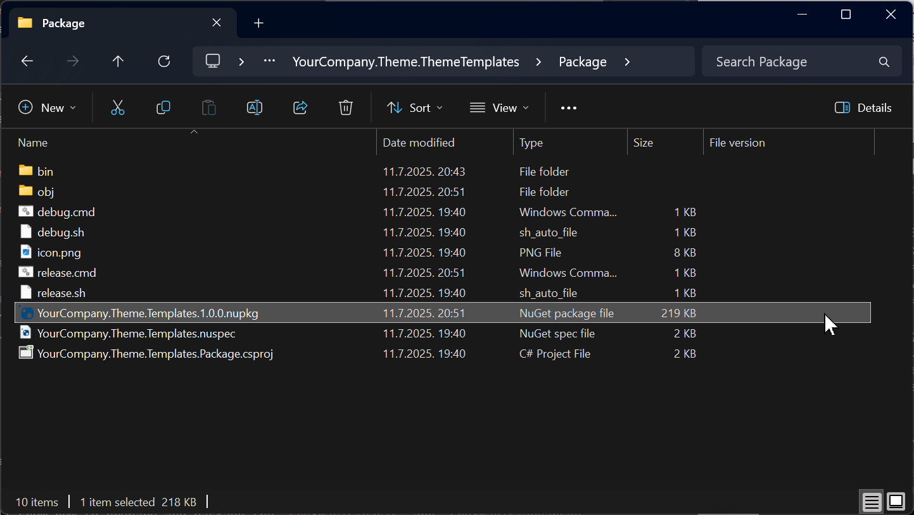

cre8magic-template-packager
The cre8magic-template-packager is a specialized template designed to:
- Deploy all theme templates within a local Oqtane.Server installation.
- Create a package for distributing theme templates.
Developers can use this template to easily generate and share their own Oqtane theme templates, streamlining the process of templates development and distribution.
How to Package a Single Theme Template
The goal is to create a package containing a single theme template, which can be used to deploy the template in Oqtane.Server or share it with others.
In this example, we will demonstrate how to prepare and package the cre8magic-basic theme template.
Creating a Visual Studio Solution for the Theme Template
Ensure that
ToSic.Cre8magic.Theme.Templates.1.0.0.nupkgis already installed in your local Oqtane development environment. If not, refer to this guide for installation instructions.Access Theme Management:
In the Oqtane Admin UI, navigate to the Themes Management section and click Create Theme.Fill in Details:
Provide the following information:Owner NameTheme Name- Select the template:
[Theme] Theme Templatesfrom the list. - Choose the
Framework.
Then, click Create Theme.
Locate the Solution:
A Visual Studio solution for your new theme is created near theoqtane.frameworkfolder.

Converting Theme Source Code to a Theme Template
Ensure that
cre8magicTransformer.exeis in the root folder. If not, download it from here.Ensure that you have the
oqtane-theme-basicfolder withcre8magic-basictheme source code.
Ensure that
cre8magic-transformer.config.jsonandtemplate.jsonfiles are present in the theme source code folder. Learn more about the Configuration File and Template File.Open a terminal and navigate to the folder containing the
cre8magic-transformer.exefile.Run the transformer with the following command:
cre8magicTransformer -s "oqtane-theme-basic" -d "YourCompany.Theme.ThemeTemplates/Client/wwwroot/Themes/Templates/yourcompany-basic"

Deploying Theme Templates to Local Oqtane
Open the
YourCompany.Theme.ThemeTemplates/YourCompany.Theme.Templates.slnsolution in Visual Studio and switch to theDebugconfiguration.Select the
YourCompany.Theme.Templates.Packageproject and build it as usual.
The
yourcompany-basicfolder containing your custom theme template will be deployed tooqtane.framework\Oqtane.Server\wwwroot\Themes\Templates\. You can now test it in Oqtane.

Packaging Theme Templates into a NuGet Package
Open the
YourCompany.Theme.ThemeTemplates/YourCompany.Theme.Templates.slnsolution in Visual Studio and switch to theReleaseconfiguration.Select the
YourCompany.Theme.Templates.Packageproject and build it as usual.
A new package,
YourCompany.Theme.Templates.1.0.0.nupkg, will be generated in theYourCompany.Theme.ThemeTemplates/Package/folder.

How to Package Multiple Theme Templates in the Same NuGet Package
To create a package containing multiple theme templates for deployment in Oqtane.Server or sharing:
- Ensure each theme template has a unique name.
- Follow the same steps as for a single theme template.